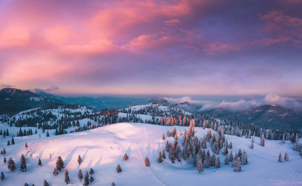

Capture the Essence of Darkness
Exploring the beauty in shadows and light, one frame at a time.
View GalleryOur Latest Captures


Our Photography Services
Portrait Photography
Capturing your unique essence and personality in stunning portraits.

Event Coverage
Documenting your special moments, from intimate gatherings to grand events.
Landscape & Nature
Bringing the breathtaking beauty of the natural world to life.
What Our Clients Say
"Dark Lens captured our wedding day perfectly. Every photo tells a story, and the quality is simply breathtaking!"
 Jane Doe
Jane Doe
"Professional, creative, and truly passionate. Dark Lens made our product shoot an absolute success. Highly recommend!"
 John Smith
John Smith
"The landscape shots are incredible. Dark Lens has an amazing eye for detail and light. We'll cherish these forever."
 Emily White
Emily White
Ready to Capture Your Story?
Let's create something beautiful together. Contact us today for a consultation.
Book a Session